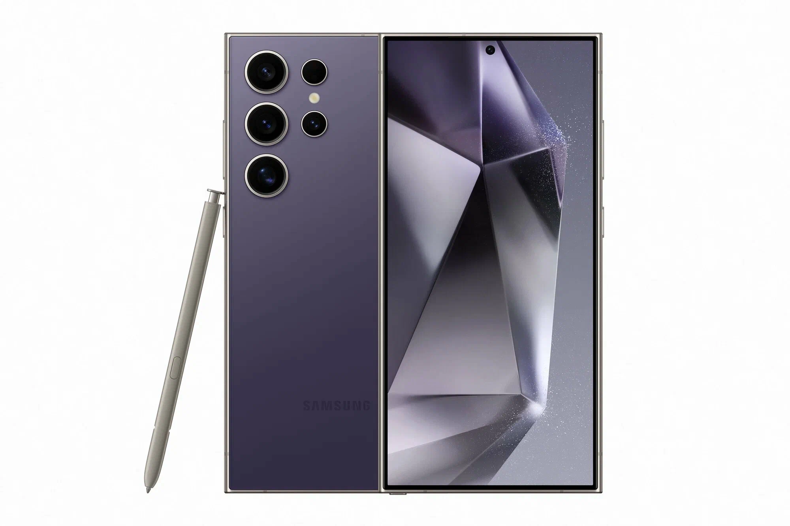

Samsung Galaxy S24 — флагманский смартфон с мощным процессором, ярким AMOLED-экраном и продвинутой системой камер. Идеально подходит для повседневного использования, фотографии и мобильных игр. Корпус выполнен из прочного стекла и алюминия, а аккумулятор обеспечивает целый день автономной работы.
Samsung Galaxy S24 — результат многолетнего развития линейки Galaxy S, воплощающий передовые технологии Samsung в компактном и элегантном корпусе. Устройство оснащено экраном Dynamic AMOLED 2X с разрешением Full HD+ и частотой обновления 120 Гц, что обеспечивает плавное отображение контента - от прокрутки ленты новостей до динамичных мобильных игр. Процессор Exynos 2400 создан по 4-нм техпроцессу и справляется с любыми задачами: многозадачность, обработка фотографий, игры на максимальных настройках. Тройная камера с главным модулем 50 Мп использует технологию искусственного интеллекта для улучшения снимков в реальном времени. Аккумулятор ёмкостью 4000 мАч поддерживает быструю зарядку 25 Вт, а корпус из стекла Gorilla Glass Victus 2 и алюминиевой рамки надёжно защищён от повреждений.
© Click Store. Все права защищены.